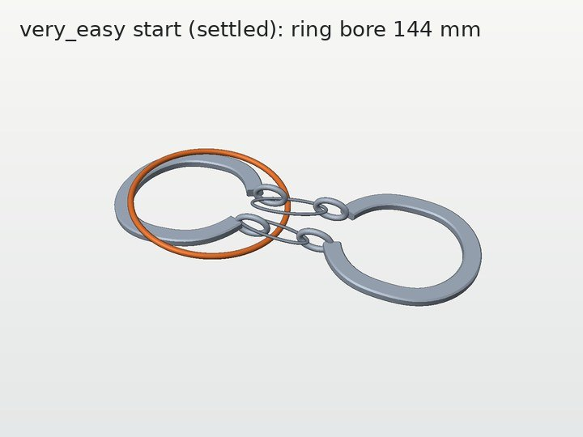
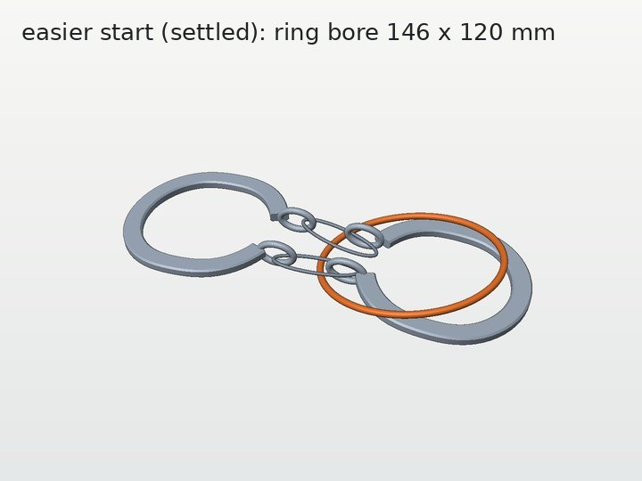

在 easy 之下再加两档
刺球出笼、马蹄环、长孔立柱解环三个任务，各加 very_easy 和 easier 两档。刺球和马蹄环的两档已实现并通过检查；长孔立柱的方案按“环从立柱上开局”重新设计，等你确认。每个任务分四部分：两档怎么设计、是否验证过可解、真实几何的渲染、实现与代码结构。
总览
三个任务用同一种做法：部件不变，每个任务只留一个难度旋钮，very_easy 和 easier 只差这个旋钮的取值。切换难度只需换 variation_id。
| 任务 | very_easy | easier | 难度旋钮 | 状态 |
|---|---|---|---|---|
| 刺球 | 不转，直接平移拉出笼 | 绕所夹的刺转一下，再平移拉出 | 三个窗的共同宽度：118 / 108 mm | 已实现并验证 |
| 马蹄环 | 提起马蹄，环沿链直接拉出，转不转都能过 | 先绕链转环，让长轴横跨马蹄，再沿链拉出 | 环孔：144 mm 圆 / 146 × 120 mm 椭圆 | 已实现并验证 |
| 长孔立柱 | 环套在立柱上、压在绳上面，直接提起越过柱顶 | 另一侧的绳圈带着珠 2 搭在环上；先把绳圈穿下去，再提环 | 开局时绳的走向 | 方案，待确认 |
刺球
1. 两档的设计
定义 你的决定
- very_easy：按初始朝向直接平移拉出来，全程不转。
- easier：直接拉拉不出来；在一次抓持内转一下（角度不限），再平移拉出来。
- 笼子：笼条分布要均匀、自然，可以把笼子做宽一点。
实现 我的方案
- 刺球沿用 easy 的 CLASSIC 刺球（10 根刺，球核直径 54 mm）。
- 笼内径 117 → 150 mm，三个等宽窗，笼条均匀立在 0°、120°、240°，一个窗正对机器人。
- 两档只差三个窗的共同宽度：very_easy 118 mm（笼条 16°），easier 108 mm（笼条 28°）。刺球和初始位姿完全相同。
- 刺球偏向机器人 28 mm，一根 60 mm 长刺伸出笼壁 29.5 mm；夹爪在笼外夹住它，easier 的“转一下”就是绕这根刺的轴转手腕。
为什么出口窗正对机器人。夹爪夹着朝向机器人的那根刺，所以刺球只能朝机器人方向拉出来；出口如果在别的方向，就要先在笼里把球挪过去，需要换抓或多步操作，那是 easy 及以上的内容。所以两档都是出口正对、路线最短，区别只在窗够不够宽：够宽就直接拉，不够宽就先转一下。
2. 笼子：从稀疏改为三根均匀笼条
为什么要加大笼子 直接平移出笼需要约 102 mm 以上的出口。在原来 117 mm 内径的笼上，三根笼条均匀分布时每个窗最宽只有 101 mm，所以必须加大笼子。
代价 夹爪夹住那根刺时，very_easy 能直拉出去的方向较窄：160 个方向中只有 2 个（约 ±6°）。原因是刺球在这个朝向上横向宽约 116 mm，只比窗小 2 mm。把窗加到 120、124 mm 只增加到 3/160、4/160。用夹爪筛了 49 个候选位姿，最多也只有 5/160；其中落稳检查过的两个，在 108 mm 窗下又找不到“转一次就能出”的路径。上一版开口 273° 时是 10–11/160。
3. 可解性验证
| 检查 | very_easy（118 mm） | easier（108 mm） | 方法 |
|---|---|---|---|
| 初始位姿与笼、底座、桌面不相交 | 是 | 是 | 精确网格 |
| 保持初始朝向能否平移出笼 | 能 | 不能 | 2 mm 平移网格上的广度优先搜索 |
| 证明过的路径（只算刺球） | 抬 5 mm → 朝 198° 直拉 | 抬 25 mm → 绕所夹的刺转 80° → 朝 174° 直拉 | RigidPathChecker 逐段证明，表面余量 ≥ 1 mm |
| 加 2F-85 夹住那根刺 | 160 个方向中 2 个能直拉 | 直拉 0/160；抬 25 mm、绕接近轴转 −75° 后 2/160 | exit_check.py --spike 9（提交 5d5a67b） |
| 初始位姿扰动（±1 mm、±2°，20 个样本） | 20/20 仍能平移出笼 | 10/20 仍出不去；另 10 个在零余量下能从背面 60° 的窗平移出去（远离机器人，夹着前面的刺时用不上）。窗改为 104 mm 能堵住，但转一次也出不去了 | 同上平移搜索 |
| CPU 物理仿真里再放 3 s | 移动 0.30 mm | 移动 0.30 mm | Genesis CPU，机器人保持 home |
未做：机器人从 home 出发的完整执行（含 Panda 手腕、IK、动力学）。
4. 渲染


5. 实现与代码结构
topogym/tasks/hedgehog_in_cage/ below_easy.py # 两档共用：笼子构造、落稳位姿；cage(窗宽 mm) 是唯一旋钮 hedgehog_in_cage_very_easy.py # 一行：cage(118.) hedgehog_in_cage_easier.py # 一行：cage(108.) topogym/config/variation_records.py # 登记两档，别名 very_easy / easier topogym/planning/hedgehog_in_cage/below_easy_witness.py # 平移可达、证明路径、CPU 落稳 ci_checks/test-hedgehog-below-easy.py # 7 项测试，约 40 s，不需要 GPU env = topogym.make("hedgehog_in_cage", variation_id="very_easy") # 或 "easier"、"easy"、"medium"、"hard"
思路：先在几何上搜索满足“一根刺朝机器人伸出笼外”的静置位姿（12 个稳定朝向 × 偏航角 × 偏向机器人的距离），在 5 种窗宽下分类；再把候选放进 Genesis 落稳后重新分类（一半候选会滑回笼中间），最后加夹爪复核。easy 的生成器和 common.py 没有改动（easy 的可解性记录按 SHA-256 锁定了这两个文件）。
马蹄环
1. 两档的设计
你的意见 任务定义不改：两只手一只拿马蹄、一只拿环就行，关键是环和马蹄的相对关系。实现 环仍同时套着两条链，部件不变，只改环孔大小。
原理。一只手把马蹄提起来，让链竖直，环沿链方向滑过下面那只马蹄就脱出。沿链方向看，马蹄是一根 138 × 25 mm 的长条（含端部小环），环孔要能把这根长条套进去。
| 档 | 环孔 | 能套过马蹄的环相位 | 机器人要做的 |
|---|---|---|---|
| easy（现有） | 135 × 128 mm 椭圆 | 0（怎么转都过不去） | 要用折合两只马蹄的技巧 |
| easier | 146 × 120 mm 椭圆 | 64°–116°（180° 中 54°） | 提起马蹄，绕链方向转环，让长轴横跨马蹄，再沿链拉出 |
| very_easy | 144 mm 圆 | 全部（居中时每边余量约 3 mm） | 提起马蹄，沿链拉出 |
“环相位”指环绕链方向转过的角度，每 2° 取一个，共 90 个。
2. 可解性验证
| 检查 | very_easy | easier | 方法 |
|---|---|---|---|
| 截面：能套过马蹄的相位 | 90/90 | 27/90 | 马蹄截面与环孔的二维包含 |
| 沿链直拉（马蹄与链固定在装配姿态） | 抽查 6 个相位都有证明路径 | 90° 相位有证明路径；0° 相位直拉会碰撞 | RigidPathChecker，表面余量 ≥ 1 mm |
| 开局时环仍套着两条链 | 是 | 是 | 沿马蹄带、端部小环和链环钢丝追踪每条链，穿过环面次数为奇数 |
| 开局时环能否单独平移取下 | 不能 | 不能 | 其他部件固定，73 个方向直线平移 |
| CPU 物理仿真里再放 3 s | 环移动 0.06 mm，仍套着 | 环移动 0.33 mm，仍套着 | Genesis CPU，2.5 ms、4 子步 |
开局布局：把装配体放在桌面上方 1 mm，CPU 落稳 5 s 后存为资源文件。“套着两条链”的检查用现有三档的落稳布局验证过，三档都判为套住。未做：机器人从平躺开局把马蹄提起来、链如何下垂，以及完整执行。
3. 渲染




4. 实现与代码结构
topogym/tasks/horseshoe_ring/ below_easy.py # 共享构造；ring(长轴 mm, 短轴 mm) 是唯一旋钮 horseshoe_ring_very_easy.py # ring(144., 144.) + 自己的落稳布局 horseshoe_ring_easier.py # ring(146., 120.) + 自己的落稳布局 common.py # 新增两个钩子：template()、rest_poses() topogym/assets/resources/variations/horseshoe_ring/below_easy_{very_easy,easier}_settled_poses.json topogym/planning/horseshoe_ring/below_easy_witness.py # 截面、证明路径、开局是否套住、CPU 落稳 ci_checks/test-horseshoe-below-easy.py # 8 项测试，约 2 s，不需要 GPU
结构和刺球一样：每档一个类、一行参数；新档只需给出 ring(...) 并落稳出自己的布局。
长孔立柱
1. 两档的设计 按你的意见重新设计，待确认
你的意见 从 s3 或 s4 开局时环已经不在立柱上，不像这个任务；应该从环套在立柱上开局。
关键 环套在立柱上时，要看绳在环的上面还是下面。只要有一段绳从环上方跨过、而那段绳的端头又穿不过环（端盘直径 110 mm，大于环孔），环就被困住，只能走完整的 5 步定式；现有三档都是这种情况。绳全部压在环下面时，环直接沿立柱往上提，越过柱顶就出来了。
| 档 | 开局 | 机器人要做的 |
|---|---|---|
| very_easy | 环套在立柱根部，压在绳上面（你最早提的“环在绳上面”）。绳一次穿过长孔，两端和现有三档相同。 | 抓住环，沿立柱提起约 30 cm，越过柱顶。 |
| easier | 环套在立柱根部。绳两次穿过长孔，两个端盘都在近侧、压在环下面；另一侧的绳圈带着珠 2 搭在环上面。 | 把绳圈连同珠 2 从环和立柱之间的空隙里穿下去（珠 2 直径 39 mm，环偏向这一侧时空隙最大约 59 mm），再提环。 |
两档都不改部件尺寸，只改绳的走向和环的位置。我之前担心环压在绳上不稳；其实绳平铺在底座上、环压在绳上面，是稳定的，仍要在 GPU 上做 FEM 落稳确认。
2. 可解性验证
- 未做 写出两档的绳控制点，环放在立柱根部。
- 未做 开局检查：沿绳中心线判断绳在环的上面还是下面，确认 very_easy 无跨过、easier 只有绳圈跨过。
- 未做 GPU 上的 FEM 落稳，确认开局稳定。
- 未做 机器人执行。
3. 渲染

4. 实现计划与代码结构 计划
topogym/tasks/slotted_post_ring/ below_easy.py # 共享构造；开局（绳控制点）是唯一旋钮 slotted_post_ring_very_easy.py # 绳全部在环下方 slotted_post_ring_easier.py # 绳两次穿孔，另一侧的绳圈搭在环上 topogym/planning/slotted_post_ring/below_easy_witness.py # 绳在环上下的判断、FEM 落稳检查（GPU） ci_checks/test-slotted-below-easy.py
Harbor 打包：同一个框架下的参数
新难度就是同一个任务的参数，没有单独的框架。仓库分三层：
- 任务源码
topogym/tasks/<任务>/：一个任务，每档一个类，共用common.py。 - 登记
variation_records.py：每档一个variation_id和别名，topogym.make(任务, variation_id=...)选档。刺球和马蹄环的新两档已登记。 - Harbor 任务包 根目录
tasks/<slug>/：从某一档、某个 seed 生成的冻结实例，包含instance.json、资源、评分脚本和 docker 配置。现有 easy / medium / hard 也是每档各一个包，分 privileged 和 standard 两种模式。
打包用现有的 scripts/topogym_mk_task.py hedgehog_in_cage --variation very_easy --scene-seed 0，[metadata].difficulty 自动取登记里的 very_easy / easier。还没做，因为生成时要在 GPU 的 docker 里跑 make-instance，镜像里也要有新代码。
待你决定
- 长孔立柱：very_easy 用“环压在绳上面，直接提起”，easier 用“另一侧的绳圈搭在环上，先穿下去再提环”，可以吗？确认后趁 GPU 空闲做 FEM 落稳。
- 刺球 very_easy 的出口宽度：现在夹爪下 2/160 个直拉方向（约 ±6°）。要放宽就得回到不均匀的笼条，或把窗加到 124 mm（笼条 8.5°，只到 4/160）。我建议保持现状。
背景
计划原文
very_easy：主要考察机械臂找合适角度接近、抓住目标物、取出并搬运的能力，尽量减少抓取后的解谜操作。
easier：在上述基础上增加少量约束，让机械臂抓住物体后需要调整角度或方向，再完成取出和搬运；整体仍比当前 easy 简单。


| 任务 | 网上的定式解法 | 机器人完整执行（仓库） |
|---|---|---|
| 刺球 | RADEMIC 提示：CLASSIC 找最宽的孔和两根最短的刺 | easy、medium 已完成（2026-09-30）；hard 未完成 |
| 马蹄环 | 一只马蹄翻过来与另一只成直角，环从 U 形底部滑出 | 当前三档没有 |
| 长孔立柱 | Fisherman's Folly 5 步（Cabalar 与 Santos，Figure 4） | 没有 |
来源：RADEMIC、Wayne's Word、Cabalar 与 Santos。渲染图由仓库生成器的网格在 CPU 上渲染。